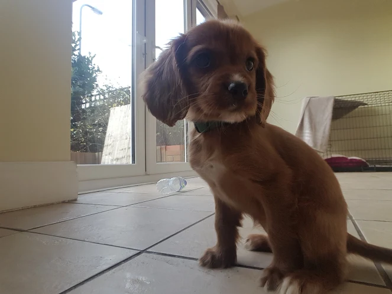

About Lady
Lady was born on the 9th of October 2018. At the moment, she is just a little pup weighing 4.5 kilograms. She has a lovely soft red coat and big fluffy ears, which give away her spaniel roots. She is a cockalier, a breed that is still relatively niche in the UK but is very popular in the US. Simply put, it is a cross between a cocker spaniel and a King Charles cavalier.
Cockaliers are known for their sociable nature and high levels of energy.
Lady's favourite pastimes include:
Begging for food

Sleeping

Sniffing

Running

GALLERY